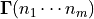
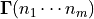
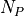
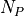

Collisional-Radiative theory¶
Here, a short overview of collisional-radiative (CR) theory is given to provide context for the CRUMPET code. The documentation is based on [1] and [2], where a complete description of the CR model implemented can be found.
The Greenland CRM equation¶
The time-evolution of neutral species interacting with a background plasma is described by a set of nonlinear rate equations of the form

where is the density of species  ,
,  is the rate coefficient for production of species from collisions between species
is the rate coefficient for production of species from collisions between species  and
and  at plasma temperature is the Einstein A coefficient for radiative decay from , and is an external sink/source of species , such as recombination or transport.
at plasma temperature is the Einstein A coefficient for radiative decay from , and is an external sink/source of species , such as recombination or transport.
The set of equations can be linearized by fixing appropriate densities , specifying the background plasma environment:
Here, is the full  matrix of rates at plasma temperature
matrix of rates at plasma temperature  and and  is a source/sink provided by collisions between pairs of backgrounds species, and any external sinks and sources;
and and  is a source/sink provided by collisions between pairs of backgrounds species, and any external sinks and sources;  is a vector of the states whose dynamics are evaluated.
is a vector of the states whose dynamics are evaluated.
The states to be evaluated are subsequently divided into two classes, P and Q, which contain the species to be evaluated time-dependently and the conduit species, respectively. The corresponding projection operators P and Q can then be defined: by ordering the states k in the linearized equations, the equation can be expressed as

where , , , , , ,  , and . Here, there are  P-states and
, and . Here, there are  P-states and  Q-states.
Q-states.
It has been shown that the solution of the P-space part of the full, linearized set of equations can be reproduced by the following equation:
The validity of the above equation is determined using the eigenvectors of M: we define T as the matrix whose columns are the normalized eigenvectors of M and in order of increasing order of the absolute magnitude of the eigenvalues  such that
such that

holds. Analogous to above, the projection operators can be used to subdivide T:
The validity of the CRM equation, thus, requires  and , where the equivalence refers to the largest Manhattan norm along the columns of the matrix.
and , where the equivalence refers to the largest Manhattan norm along the columns of the matrix.
The remaining terms of the CRM equation are, hence, given by
and
with initial conditions given by
Model limitations/assumptions¶
This CRM desctiption of the denity rate coefficients has the following limitations, as described in [1] and [2]:
Only collisional reactions between a background species and a CRM species are considered: reactions between the CR-modeled species are not treated by this formulation
The CR energy rates¶
The energy rate coefficients associated with a CRM can be constructed in analogy with the CRM equation above, as explained in [2] for the electrons. CRUMPET makes an attempt to extend the energy rate coefficients to other species/processes than the electrons, in a manner analogous to that outlined in [2]. In CRUMPET, the potential energy sink per unit volume,  , is solved from the equation
, is solved from the equation
where and refers to the total potential of the reactants and products, respectively, and and to the potential of CRM species k and j, respectively, and i is a background (non-CRM) species. The energy lost as radiation is solved from
which is further divided into atom and molecule radiation depending on whether j and k are atomic or molecular species. For the Franck-Condon energy, CRUMPET applies the UEDGE formalism of a common energy and, thus, temperature for the ions and atoms. Hence, a common Franck-Condon sink/source term is used for the ion/atom energy:
where is the mean kinetic energy of the reaction products, K, for reactions where electrons are one of the reactants, such as dissociation energy.
.. If the reaction is a proton-impact reaction, i.e. one of the reactions is a plasma ion, producing an electron, is assumed, where is the local electron temperature.
Here, the Franck-Condon energy resulting from production of conduit species is directly attributed to the ion/atom equation: thus, the energy of the conduit species are not evolved. Subsequently, any energy-dependent reaction rates (heavy-particle interactions) of reactions involving the conduit species are evaluated at the prescribed target energy (or, alternatively, temperature). This approximation is valid unless there is an energy source for the conduit species capable of significantly affecting the target particle energy-dependent reaction rates. Finally, is calculated as the sum of the above energy sinks/sources by assuming energy conservation of the system.
The CRM evaluation is then done in analogue to the density rate coefficients:
where
and
where is the appropriate term according to the above equations, j and k are CRM species, and i are background species. Analogous to above, the energy rate matrix U, ordered by P and Q space, can be expressed as a block matrix, using the previously defined projection operators:
The subsequent CR approximation for the energy terms, thus, becomes:
where
where and are the same as defined above. This yields an matrix, rather than than the matrix for the density rate coeffients: this reflects the fact that although a small population change is associated with the conduit species, a large energy change can still be associated with a conduit species if is sufficiently large. The above CRM is evaluated separately for each energy sink/source, i.e. for the electron energy sink/source, the ion/atom energy sink/source, the potential energy sink/source, the atom line radiation sink/source, and the molecule line radiation sink/source.
For coupling of CRUMPET to external codes, is summed over the columns to yield the net energy change associated with the P-species densities, as the coupled code is assumed to only solve the densities of the P-species.
Model limitations/assumptions¶
This CRUMPET description of the energy sinks and sources conforms to the UEDGE formalism and, presently, has the following limitations:
Presently, the model evaluates a common ion/atom source, which is compatible with the UEDGE formalism
The Franck-Condon energy is assumed to go directly into the ion/atom energy, rather than into any resulting conduit species: this assumption is valid unless the energy source is sufficiently strong to significantly alter the target particle energy-dependent reaction rates
..- Electrons stemming from proton-impact reactions are assumed to be heated to the local electron temperature by the impacting particle - Electron-impact ionization reactions only assess the energy change associated with the ionization potential: any volumetric cooling due to the newly formed ion/electron pair is assumed to be considered by the coupled transport code - The energy sink/source due to electron-ion recombination (radiative and three-body recombination) have not yet been implemented - The energy sink/source from molecular re-association has not yet been implemented: considerations of the formulation of the CR formulation raise question about how to consider re-association (see above)